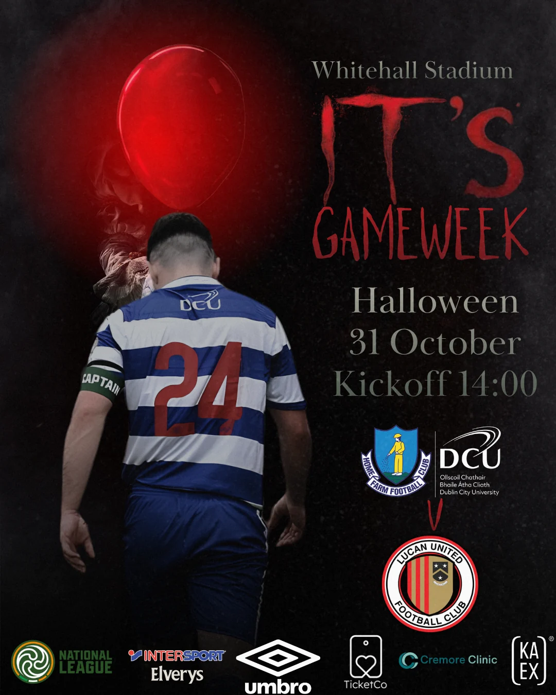

Selected club projects
Creative work built around football clubs and their identity. This collection will grow as I take on more projects. Including matchday work for Home Farm DCU and an independent Weston-super-Mare AFC rebrand concept.

Matchday creative · 31 October 2026
Home Farm DCU
Two Halloween-themed matchday graphics for Home Farm DCU against Lucan United at Whitehall Stadium. Horror-inspired treatments built around the club’s blue-and-white colours.
Explore both Home Farm designs ↗
Independent concept · Not commissioned
Weston-super-Mare AFC
A photography-led social media rebrand concept covering matchdays, starting XIs, goals, player features and a consistent visual identity. Created independently, not on commission from the club.
Explore the full project ↗